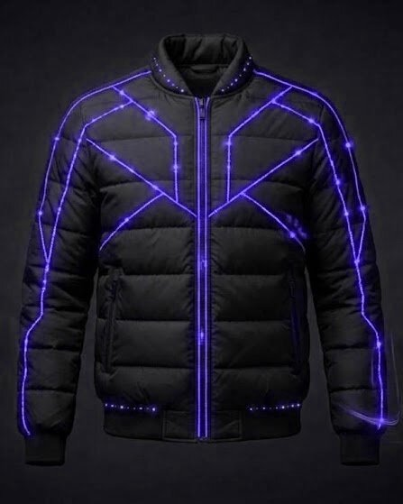
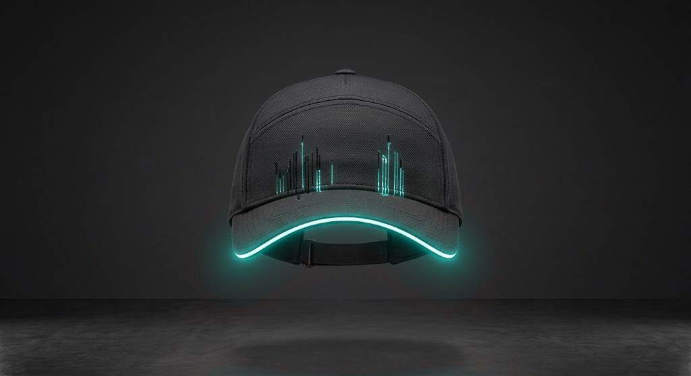
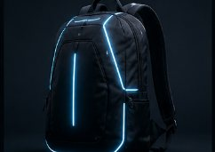
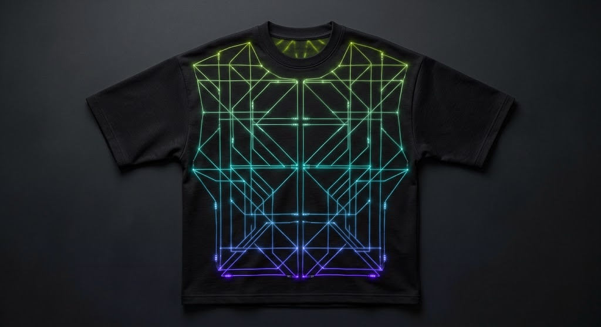

Luz tejida, no estampada
La fibra óptica va dentro del tejido, no pegada encima.
Se dobla y se mueve contigo sin perder brillo.
Streetwear diseñado para destacar cuando cae el sol. Fibra óptica integrada en la tela, no impresa encima de ella.
Desliza para descubrir la colección
La fibra óptica va dentro del tejido, no pegada encima.
Se dobla y se mueve contigo sin perder brillo.

Fijo para ir a tu aire, parpadeo para que te vean en bici o degradado para que la luz respire.
Cada diseño trae el modo que mejor le sienta.

Se carga como el móvil.
Se quita en un segundo para lavar la prenda a 30 °C del revés.

Visible de lejos en bici o patinete.
Envío gratis desde 120 € (simulado: es un prototipo).
Así la llevan puesta. Toca el producto para verlo.
«En el concierto no paraban de preguntarme dónde la había comprado. Brilla muchísimo y no pesa nada.»
«La uso para ir en bici al trabajo. El parpadeo se ve desde lejísimos.»
«Me encanta que la luz vaya en la visera: discreta de día y espectacular de noche.»
Reseñas y valoraciones ficticias, creadas para el prototipo.
Proyecto de Soluciones Informáticas para la Empresa · UCAM
Camisetas, chaquetas, mochilas y gorras con fibra óptica. Filtra por prenda, color de luz o modo y encuentra la tuya.
Ver la colección →Prendas con fibra óptica tejida para después del atardecer. Elige prenda, color de luz y modo.
Cada prenda trae un modo. Así se ven en la calle:
Consulta el estado con tu código o abre una incidencia en soporte.
Seguimiento de pedido Soporte